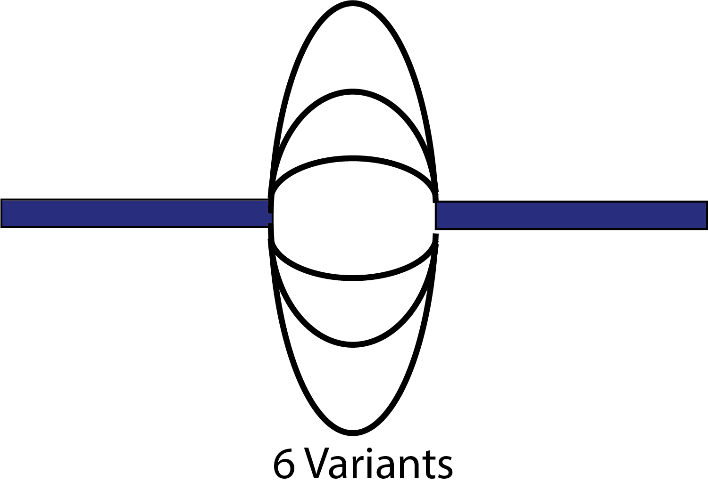

Science. Math. Thoughts. Everything.
THOUGHTS AND COMMENTS ARE MY OWN.
My thoughts..
I recently stumbled across the idea of graph genomes, and I will continue digging into this area. Here I will discuss my thoughts about HISAT2 (Kim et al.).
Traditionally reference genomes are used for read alignment, but there are drawbacks to such an approach, such as lacking information about various structural variants. A graph genome is a graph representation of the genome, and it can contain all of the known haplotypes and various loci not present within one genomic representation. Problems with graph genomes include traversing the genome itself. This can be incredibly time consuming as well as memory inefficient. Graph genomes are constructed based on the genomic variations. Wherever there is variation, a new edge is added, thereby creating paths where variation exists:
Previous graph genome implmentations include vg (github.com/vgteam/vg), Graph Genome Pipeline (GGP; https://www.ncbi.nlm.nih.gov/pubmed/30643257), and now HISAT2 (HISAT2). Problems existing with graph genomes could be from lacking variant information potentially not captured using short reads. However, it is speculated that long reads along with improved alignemnt could fix these problems (Ameur, 2019).
Welcome to the blog that aims to fuse computer science, synthetic biology, and applied mathematics.